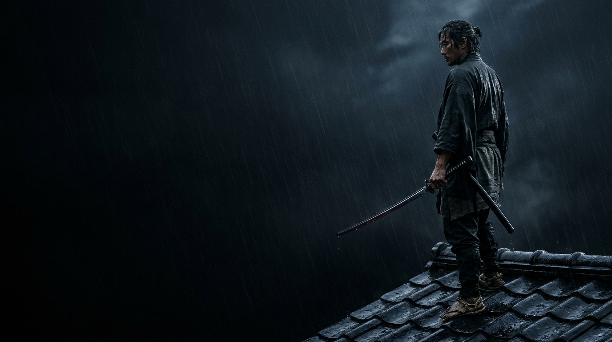
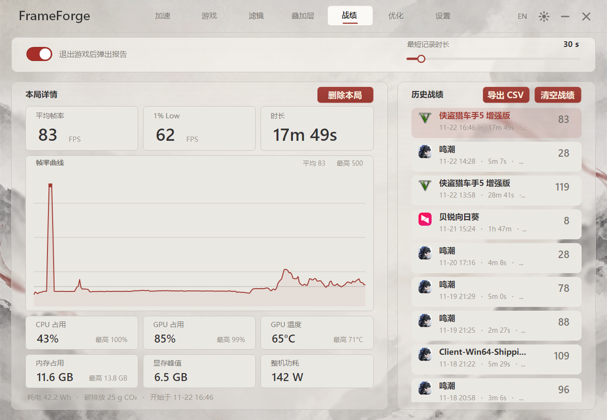
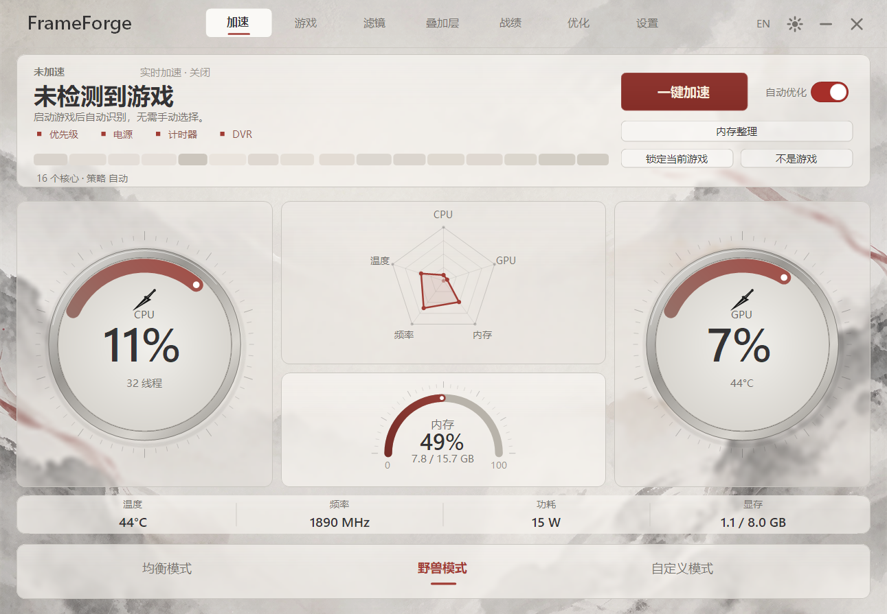

STANCE I · 事务回滚
SCTL v2 事务日志与看门狗
所有电源计划、1 ms 系统计时器、进程优先级与内存整理改动，在执行前均以 HMAC 签名记录原始快照。即便遭遇系统断电或强杀进程，独立看门狗进程也会自动将系统还原至分毫不差。

单文件约 7.1 MB 的原生 Windows 帧率增效与监测工具。通过 Intel PresentMon ETW 采集实时帧率与 1% Low，默认零 DLL 注入；所有系统调度由签名事务日志全程托管，收剑即复原。
弃用臃肿的 Electron 与后台常驻服务。FrameForge 以纯原生 Win32 与 C# 构建，将电源计划、1 ms 计时器、核心拓扑软引导与硬件滤镜收束于单一可控内核——拖动右侧 3D 剑锋，或按下键盘 T 键在「玄夜」与「素宣」之间实时淬炼光影。
所有电源计划、1 ms 系统计时器、进程优先级与内存整理改动，在执行前均以 HMAC 签名记录原始快照。即便遭遇系统断电或强杀进程，独立看门狗进程也会自动将系统还原至分毫不差。

针对大小核与多 CCD 处理器架构，提供自动、P 核优先与单 CCD 策略。每 2 分钟动态采样最空闲物理核心，轻柔引导游戏主线程，不暴力锁死亲和性掩码，兼顾帧生成稳定与后台响应。

绕开易触发反作弊的 Shader 注入路径，直接通过系统放大镜色彩矩阵、Gamma LUT 与 NVIDIA NVAPI 数字振动完成实时调色，同时原生支持 DDC/CI 硬件背光控制与专业 .icc 校色文件加载。

退出游戏瞬间自动生成完整战报，涵盖平均帧率、1% Low、核心温度与整卡功耗。本地永久留存最近 300 局对局帧率走势，支持一键导出标准 CSV 用于硬件调优与横向复盘。
v1.6.5 重构了整套叠加层视觉。等宽数字保证帧率波动不抖列，五套配色与三档底板在自绘分层窗口、RTSS 与设置预览之间完全一致。
不仅官网具备黑白双境，FrameForge 软件本体同样以纯原生 GDI+ 绘制整卡毛玻璃与水墨底纹，无第三方重型 UI 框架。左右拖动剑锋分界线对比两套实机界面。


全部源代码以 MIT 协议开源，无需安装 Visual Studio，直接调用 Windows 系统自带 .NET Framework 4.8 编译器即可本机从零构建。
| 维度 | FrameForge | 传统优化与监控套件 |
|---|---|---|
| 体积与部署 | 单文件约 7.1 MB，免安装无服务残留 | 数十至数百 MB，常附带多项后台服务 |
| 反作弊兼容 | 默认零 DLL 注入，反作弊组件永久排除 | 普遍注入渲染钩子，易与部分反作弊冲突 |
| 系统回滚 | 签名事务日志加看门狗，崩溃自动还原 | 缺少事务记录，异常退出常遗留改动 |
| 隐私与源码 | MIT 全量开源，零遥测零广告 | 闭源、弹窗推广或强制登录 |
在 Windows 10 或 Windows 11 上直接编译，或核对 v1.6.5 发布件哈希。